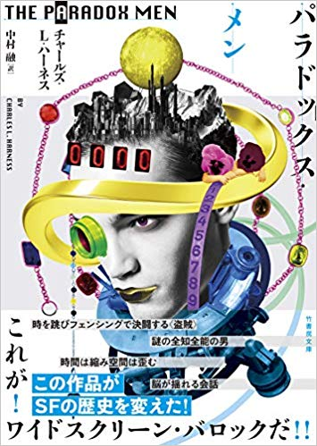

2019/12/1
パラドックス・メン
時は2177年、舞台はアメリカ帝国。 物語はひとりの男が権力者の寝室に忍びこむところから始まる。 その男こそが〈盗賊〉アラール。記憶を失くし、名前を失くし、 不時着した正体不明の宇宙船より現れた男。権力を一手に握った、 悪しきアメリカ帝国宰相ヘイズ=ゴーントを討つ力を持った、唯一の男。 帝国警察に追われる中、ケイリスという女性と逢いしアラールは、彼女に命を救われる。 はじめて逢うにも関わらず記憶を揺さぶられ、その理由根拠は一切不明。 この時を境にアラールを中心として宇宙は回りだす。 謎多き宇宙船トインビー22、全知全能の男メガネット・マインド、 ヘイズ=ゴーントとの対峙、フェンシングによる決闘……時間は縮み空間は歪む。